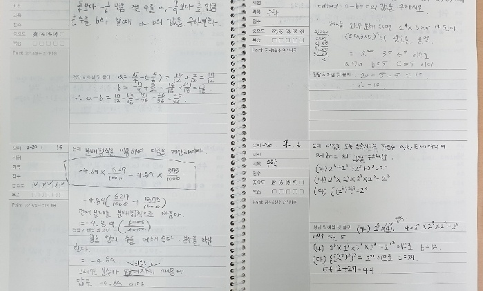
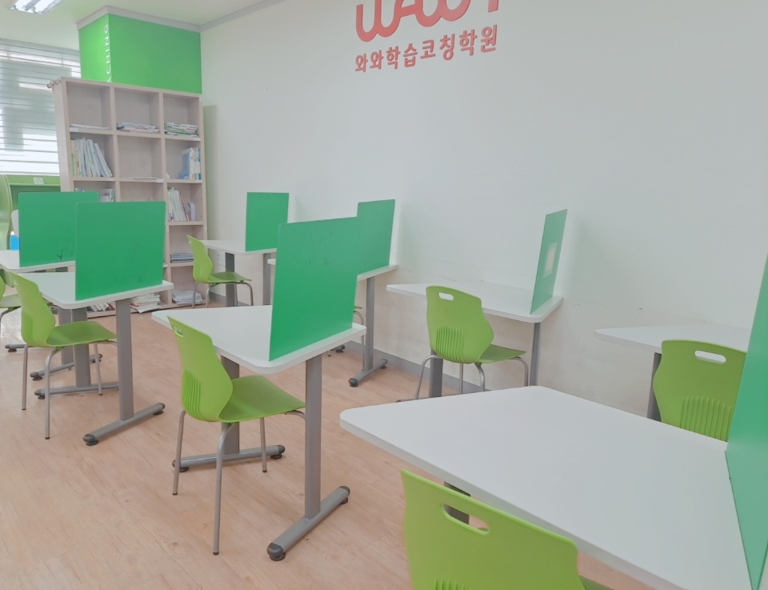
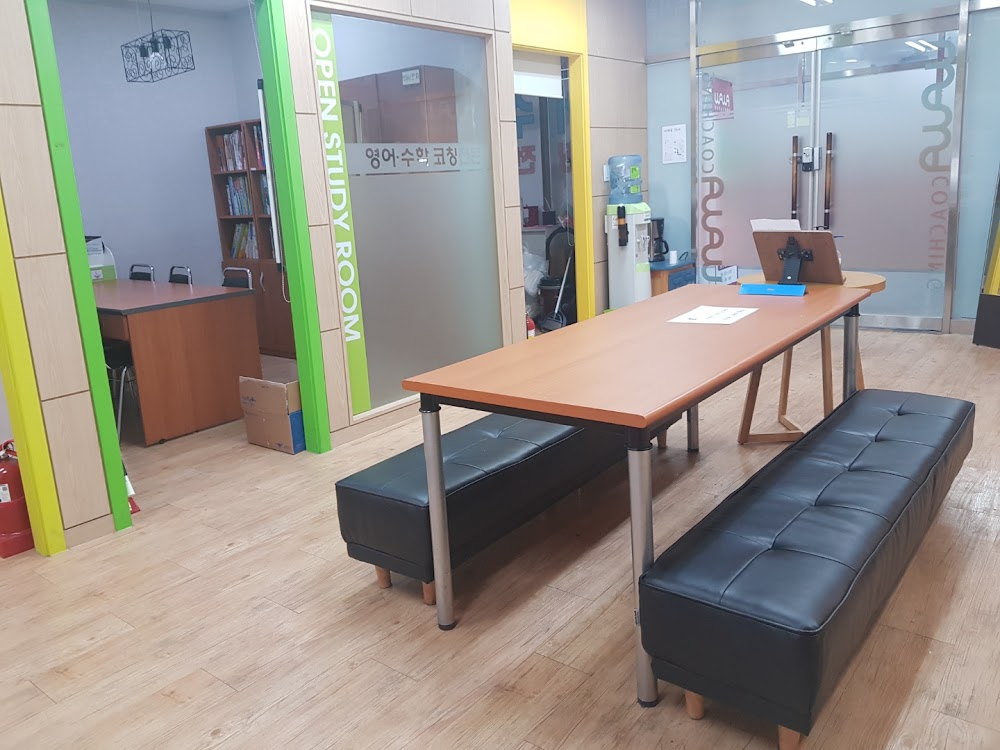

안녕하세요, 은평구 진관동 은평뉴타운의 와와학습코칭 은평점입니다. 초등 6학년 학부모님이 여름이면 가장 많이 물으십니다. "중학교 가기 전에 뭘 준비해야 하나요?" 오늘은 예비 중1 준비에 대해 전해드립니다.
선행보다 먼저, 공부 습관입니다
많은 분이 중학 수학 선행부터 떠올리십니다. 하지만 중학교에서 무너지는 아이의 진짜 이유는 진도가 아니라 스스로 공부하는 습관의 부재인 경우가 훨씬 많습니다.
초등 때는 부모님과 학원이 챙겨주던 것을, 중학생이 되면 스스로 해야 합니다. 그 전환이 안 되면 아무리 선행을 해도 소용이 없습니다. 그래서 은평점의 예비 중1 과정은 '습관'부터 잡습니다.

중학 영어·수학, 이 순서로
습관이 잡히면 과목 준비에 들어갑니다. 은평점이 권하는 예비 중1 준비 순서입니다.
- 수학 — 초등 연산·분수·비율 구멍 메우기 → 중1 1학기 개념
- 영어 — 기초 문법 뼈대 잡기 + 매일 짧은 독해
- 공통 — 노트 필기와 오답 정리하는 법 익히기

자유학년제, 이렇게 활용하세요
중1은 대개 자유학년제로 시험 부담이 적습니다. 이 시기를 '노는 해'로 흘려보내면 중2에 크게 흔들립니다. 반대로 이때 공부 습관과 기초를 다져두면 이후 3년이 편안해집니다. 은평점은 예비 중1 학생이 중학 생활에 자신 있게 첫발을 딛도록 함께합니다. 은평뉴타운·구파발 학부모님들, 지금이 준비할 때입니다.
.와와학습코칭 은평점 학년별 공부 방법
진관동 와와학습코칭(와와학습코칭 은평점)은 초등학생·중학생·고등학생 각 학년에 맞는 공부 방법으로 지도합니다. 조용한 자습실·공부방에서 스스로 공부하고, 영어학원·수학학원·과학학원·국어학원처럼 과목별 코칭까지 한곳에서 받을 수 있습니다.
- 초등학생 (초1·초2·초3·초4·초5·초6) — 매일 정해진 분량을 스스로 해내는 공부 습관과 기초 개념 잡기. 진관동 초등 영어학원·수학학원·공부방을 찾으신다면.
- 중학생 (중1·중2·중3) — 자유학년제·내신 대비, 오답 정리와 서술형 훈련. 진관동 중등 영어학원·수학학원·과학학원·국어학원.
- 고등학생 (고1·고2) — 내신과 수능을 함께 잡는 자기주도학습 플래닝과 취약 과목 집중. 진관동 고등 영수학원·종합학원·자기주도학습.
와와학습코칭 은평점 위치와 주변
- 🚇 교통 — 3호선 구파발역에서 도보 약 3분 (은평뉴타운 중심)
- 🏢 인근 아파트 — 은평스카이뷰자이, 박석고개힐스테이트, 우물골두산위브, 은평뉴타운꿈에그린, 구파발래미안 등 단지에서 도보로 오실 수 있습니다.
와와학습코칭 은평점 인근 학교
진관동·은평뉴타운 와와학습코칭(와와학습코칭 은평점)은 인근 학교 학생들의 내신·수능을 함께 준비합니다. 아래 학교에 다니는 학생이라면 영어학원·수학학원·과학학원·국어학원을 따로 찾을 필요 없이, 가까운 우리 센터에서 과목별 1:1 자기주도학습 코칭을 받을 수 있습니다.
- 인근 초등학교 — 은진초등학교, 은빛초등학교, 진관초등학교, 신도초등학교 영어학원·수학학원·과학학원·국어학원
- 인근 중학교 — 진관중학교, 신도중학교, 연천중학교 영어학원·수학학원·과학학원·국어학원
- 인근 고등학교 — 진관고등학교, 신도고등학교, 대성고등학교, 선일여고등학교 영어학원·수학학원·과학학원·국어학원
📍 와와학습코칭 은평점 센터 정보 자세히 보기 — 주소·전화·인근 학교 안내를 확인하실 수 있습니다.